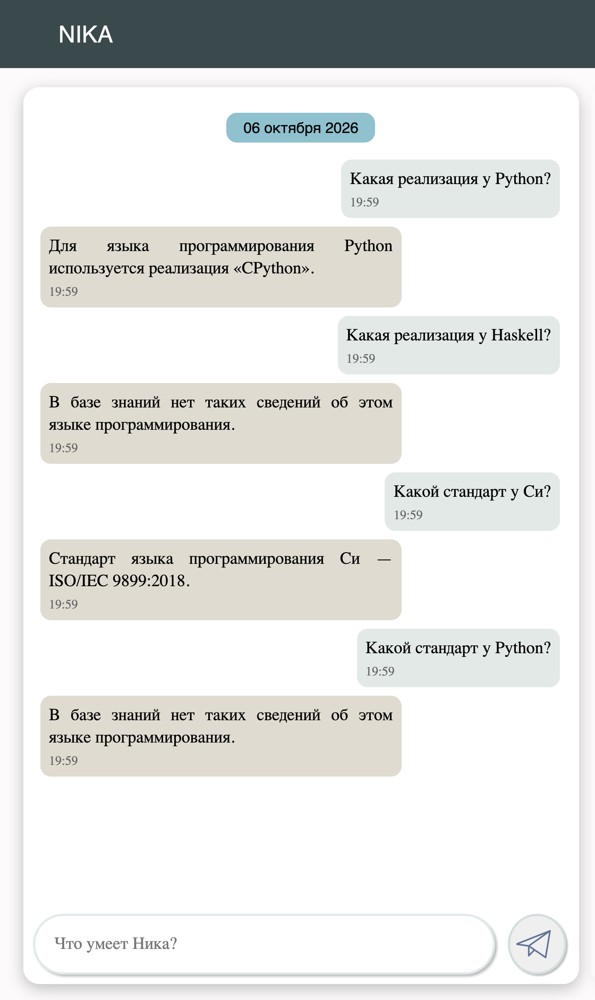

Логические правила и фразы ответа, вариант №26 — «Языки программирования». Сначала объяснение с нуля: что сделано и как оно работает. Потом 8 вопросов преподавателя, задачи и то, что ещё могут спросить.
Это надо назвать не задумываясь
Типов вопросов о языках
5 и общий класс
Правил ответа
6: пять по существу и одно на случай «сведений нет»
Классов фраз / фраз
6 / 12, из них 10 с шаблоном
Правил распознавания вопросов
40: 5 типов × 8 языков, по 4 формулировки
Сценарий диалога
8 вопросов, три пары «вопрос один — ответ разный»
Главная идея
ответ зависит от состояния базы знаний
Часть I · с нуля
1. Вся работа за две минуты
Что это было, что сделано и чем закончилось.
Суть
В первой лабораторной в базу знаний системы NIKA занесены сведения о языках программирования: у Python автор Гвидо ван Россум, реализация CPython, год создания 1991. Во второй система научилась понимать, о чём её спрашивают.
Третья лабораторная отвечает на следующий вопрос: система поняла, что спросили про реализацию Python, — как ей теперь построить ответ? Для этого нужны две вещи:
правило ответа — «если это вопрос о реализации и у этого языка в базе реализация записана, отвечай фразой из такого-то набора»;
фраза с шаблоном — текст с пропусками: «Реализация языка программирования ${…} — ${…}.» и описание, откуда в базе взять слова для пропусков.
Система отвечает на пять типов вопросов про восемь языков:
Вопрос
Что берётся из базы
Ответ Ники
Кто создал Haskell?
автор
Автор языка программирования Haskell — Саймон Пейтон Джонс.
В каком году создан Си++?
год создания
Год создания языка программирования Си++ — 1985 год.
Какая реализация у Python?
реализация
Реализация языка программирования Python — CPython.
Какой стандарт у Си?
стандарт
Стандарт языка программирования Си — ISO/IEC 9899:2018.
Кто сопровождает Java?
сопровождающая организация
Язык программирования Java сопровождает Oracle Corporation.
главная мысль
Один и тот же вопрос даёт разные ответы в зависимости от того, что записано в базе. «Какая реализация у Python?» — ответ по существу, потому что реализация Python в базе есть. «Какая реализация у Haskell?» — «В базе знаний нет таких сведений об этом языке программирования», потому что для Haskell реализация не записана. Текст ответа нигде не хранится готовым: он каждый раз собирается из базы.
2. Что такое NIKA
Из чего состоит система и что где открывать.
Три части системы
Часть
Что это
Простыми словами
База знаний
граф из понятий и связей между ними, записанный на языке SC-код
всё, что система знает: «Python — язык программирования», «реализация Python — CPython»
Решатель задач
набор программ-агентов, каждый делает одно действие над базой
то, что система умеет: распознать вопрос, выбрать правило, собрать фразу
Интерфейс
окно чата и окно просмотра базы
то, что видит человек
Знания, правила и тексты ответов лежат в одной и той же базе знаний. В третьей лабораторной не написано ни строчки программного кода — в базу добавлены новые знания: правила и фразы. Агенты, которые ими пользуются, в NIKA уже были.
Три адреса
Адрес
Что там
Зачем на защите
localhost:3033
диалоговое окно Ники
задать вопрос и получить ответ
localhost:8000
sc-web — просмотр базы знаний
показать правило, класс фраз, экземпляр
localhost:8090
sc-сервер, к нему подключаются два окна выше
открывать не нужно
3. Словарь
Слова, без которых дальше не разобраться.
Из чего состоит база знаний
Слово
Что значит
Пример из работы
узел
обозначение чего угодно: предмета, понятия, отношения
python_language, cpython_interpreter
дуга
связь между двумя элементами
от Python к его реализации
ссылка
узел с текстом внутри
[Python], [Какая реализация у Python?]
класс
множество однотипных объектов. Имя начинается с concept_
concept_programming_language
экземпляр
конкретный объект, элемент класса
python_language, haskell_language
неролевое отношение
связь между двумя объектами. Имя с nrel_, по-русски со звёздочкой
роль элемента внутри чего-то. Имя с rrel_, по-русски с апострофом
rrel_entity — «сущность'»: о чём сообщение
переменная
«любой подходящий элемент». Имя начинается с подчёркивания
_message, _entity
контур (структура)
кусок графа, обведённый рамкой, с которым работают как с одним целым
условие правила
шаблон
контур с переменными. Система ищет в базе всё, что на него похоже, и узнаёт, чему равны переменные
«какое-то сообщение, у которого есть сущность, а у неё — реализация»
Слова про диалог и логику
Слово
Что значит
Пример из работы
сообщение
узел в базе, который появляется, когда человек отправил текст в чат
узел с текстом «Какая реализация у Python?»
класс сообщения
что хотят узнать
concept_message_about_implementation — вопрос о реализации
сущность сообщения
о чём спрашивают. Привязана к сообщению ролью rrel_entity
python_language
логическое правило
запись «если в базе есть вот это, то добавь вот это». Имя с lr_
lr_answer_about_implementation
импликация
связка «если … то …». В каждом правиле ровно одна
условие ⇒ следствие
конъюнкция, дизъюнкция
«и» и «или»
четыре условия правила ответа связаны «и»; четыре формулировки вопроса — «или»
правило распознавания
по тексту вопроса назначает сообщению класс и сущность. Тема ЛР2
lr_classify_implementation_of_python_lang_message
правило ответа
по классу сообщения решает, из какого набора фраз отвечать. Тема ЛР3
lr_answer_about_implementation
приоритет правила
очерёдность проверки: сначала правила первого приоритета, потом второго, потом третьего
ответы по существу — второй, «сведений нет» — третий
класс фраз
набор взаимозаменяемых формулировок одного ответа
concept_phrase_about_implementation, в нём две фразы
фраза с шаблоном
текст с пропусками ${…} и описание, чем их заполнить
«Реализация языка программирования ${_language_name_impl} — ${_impl_name}.»
структура-образец
шаблон, привязанный к фразе: по нему в базе ищутся слова для пропусков
сообщение → язык → его реализация → название реализации
общий класс (надкласс)
класс, объединяющий несколько частных
concept_message_about_language_property — любой вопрос о свойстве языка
Два формата файлов
.scs — граф, записанный текстом. Так сделаны классы сообщений, классы фраз и сами фразы.
.gwf — граф, записанный рисунком (внутри XML с узлами и дугами). Так сделаны все логические правила.
Это не вкус, а необходимость: правила в текстовом виде из шаблона репозитория не работают, а фразы с шаблоном не работают в .gwf — система молча отвечает Answer isn't found.
4. Что было до ЛР3
На что опирается работа.
ЛР1 — знания о языках программирования
В базе 23 класса, 17 отношений и 40 экземпляров. Вот Python в сокращении:
python_language
<- concept_programming_language; /* это язык программирования */
=> nrel_main_idtf: [Python] (* <- lang_ru;; *); /* русское название */
=> nrel_language_author: guido_van_rossum; /* автор → «Кто создал Python?» */
=> nrel_creation_year: year_1991; /* год создания → «В каком году создан Python?» */
=> nrel_language_implementation: cpython_interpreter; /* реализация → «Какая реализация у Python?» */
=> nrel_maintaining_organization: python_software_foundation;; /* кто сопровождает */
Читается так: <- — «принадлежит классу», => — «связан отношением», в квадратных скобках — текст, ;; — конец предложения. Стандарта у Python в базе нет — поэтому на «Какой стандарт у Python?» система ответит, что сведений нет.
Что записано у каких языков
У разных языков в базе заполнено разное. Эта таблица — ключ ко всей работе: где стоит значение, Ника отвечает по существу, где прочерк — фразой «сведений нет».
Язык
Автор
Год
Реализация
Стандарт
Организация
Python
Гвидо ван Россум
1991 год
CPython
—
Python Software Foundation
Си
Деннис Ритчи
1972 год
GCC
ISO/IEC 9899:2018
Международная организация по стандартизации
Си++
Бьёрн Страуструп
1985 год
GCC
ISO/IEC 14882:2020
Международная организация по стандартизации
Java
Джеймс Гослинг
1995 год
виртуальная машина Java
—
Oracle Corporation
JavaScript
Брендан Эйх
1995 год
—
ECMA-262
—
Haskell
Саймон Пейтон Джонс
1990 год
—
—
—
Пролог
Ален Колмероэ
1972 год
—
—
—
язык ассемблера x86
—
—
—
—
—
Пробелы настоящие: они остались с первой лабораторной, файлы которой в этой работе не менялись. Из 40 сочетаний «вопрос × язык» 25 дают ответ по существу и 15 — фразу «сведений нет».
ЛР2 — система понимает вопрос
Во второй лабораторной появились правила распознавания: по тексту сообщения они назначают ему класс и сущность. Там это было сделано для вопросов «Что такое …?», «На что декомпозируется …?» и «Кто создал …?». В третьей тот же приём применён к четырём новым типам вопросов, а правила про автора доработаны.
Wit.ai не используется: штатный токен сервис отвергает, поэтому распознавание выполняют логические правила в самой базе знаний.
5. Что требовалось и что сделано
Задание методички по пунктам.
Требование → результат
Что требует методичка
Что сделано
Логические правила покрывают каждый класс фраз
Шесть классов фраз — шесть правил ответа, по одному на класс
Правила используют не только класс сообщения, но и выделенную сущность
В условии пяти правил «по существу» есть rrel_entity: правило смотрит, о каком языке вопрос и что о нём записано
Разные ответы на одно и то же сообщение в зависимости от состояния базы знаний
Три пары вопросов в сценарии: реализация Python / Haskell, стандарт Си / Python, организация Java / JavaScript
Ответ виден в пользовательском интерфейсе
Все восемь вопросов сценария отвечают в окне чата
Фразы не повторяются
12 разных фраз
Не менее двух фраз на класс
Ровно по две в каждом из шести классов
Не менее трёх фраз с шаблоном на весь диалог
Десять
Что добавлено в базу знаний
Что
Сколько
Зачем
Классы сообщений
4 новых и общий класс
год создания, реализация, стандарт, организация; пятый, про автора, был с ЛР2
Правила распознавания
40
каждый из пяти типов вопроса для каждого из восьми языков, по четыре формулировки
Правила ответа
5 новых
четыре «по существу» и одно «сведений нет»; шестое, про автора, было с ЛР2
Классы фраз и фразы
5 классов, 10 фраз
восемь фраз с шаблоном и две без; ещё две, про автора, были с ЛР2
про числа и про ЛР2
В ЛР2 правил распознавания было 67, из них 7 про автора с двумя формулировками. В ЛР3 эти семь заменены: в них добавлен общий класс, две формулировки и восьмой язык. Всего правил распознавания теперь 100: 58 «Что такое …?», 2 «На что декомпозируется …?» и 40 новых. Формулировка «Кто автор Пролог?» стала «Кто автор Пролога?».
Часть II · как это работает
6. Путь одного вопроса через систему
Что происходит от нажатия кнопки до ответа. Пример — «Какая реализация у Python?». Строки в серых блоках — записи из настоящего журнала решателя, в сокращении.
Семь шагов
Сообщение попадает в базу знаний штатноеОкно чата создаёт в базе узел-сообщение и вешает на него ссылку с текстом. Появление сообщения запускает главного агента диалога.
MessageReplyAgent started
Text link is found
Запускается программа обработки сообщения штатноеЭто записанная в базе последовательность шагов: кого из агентов звать и в каком порядке. Сначала распознавание, в конце — формирование ответа.
NonAtomicActionInterpreterAgent started
Распознавание: какой это вопрос и о чём наша работаАгент перебирает правила распознавания и сравнивает текст сообщения с образцами. У правила про реализацию Python совпал первый из четырёх образцов. Правило дописывает в базу три вещи: сообщение — вопрос о реализации; оно же — вопрос о свойстве языка; его сущность — Python.
There is 113 formulas in 1 set
Compute atomic logical formula if_implementation_of_python_lang_1 true
Message is classified.
Промежуточные шаги программы штатноеДальше в программе стоят штатные агенты поиска слова по букве и погоды. Каждый видит, что вопрос не его, и сразу завершается.
FindWordInSetByFirstLetterAgent: the message isn’t about letter search
Выбор правила ответа наша работаАгент ответа перебирает правила по приоритетам. Правило lr_answer_about_implementation проверяет четыре условия: это сообщение; это вопрос о реализации; у него есть сущность; у этой сущности в базе записана реализация. Все четыре выполнены. Перебор останавливается на первом сработавшем правиле.
StandardMessageReplyAgent started
There is 7 formulas in 2 set
Trying to generate by formula: lr_answer_about_implementation
Compute atomic logical formula true
Target is achieved
MessageHandler: the logic rule lr_answer_about_implementation is found
Сборка фразы наша работаК правилу привязан класс фраз. Агент берёт из него одну из двух фраз и её структуру-образец, по образцу находит в базе название языка и название реализации и подставляет их в пропуски.
MessageHandler: the phrase with the content
"Реализация языка программирования ${_language_name_impl} — ${_impl_name}." is found
PhraseGenerationAgent started
Generated text: "Реализация языка программирования Python — CPython."
Ответ появляется в чате штатноеГотовый текст записывается в базу как ответное сообщение, окно чата его показывает.
MessageReplyAgent finished
что из этого сделано в работе
Агенты и порядок шагов были в NIKA. В работе добавлено то, чем они пользуются: правила распознавания (шаг 3), правила ответа (шаг 5), фразы и их образцы (шаг 6).
То же самое одной схемой
«Какая реализация у Python?»
↓ правило распознавания сравнивает текст с образцами
сообщение ∈ concept_message_about_implementation
сообщение ∈ concept_message_about_language_property
сообщение → rrel_entity → python_language
↓ правило ответа проверяет: у python_language есть nrel_language_implementation? да
класс фраз: concept_phrase_about_implementation
↓ образец фразы: python_language → реализация → cpython_interpreter → его название
«Реализация языка программирования Python — CPython.»
7. Правило распознавания вопроса
Приём из ЛР2, применённый к новым вопросам.
Что правило говорит
ЕСЛИ текст = «Какая реализация у Python?»
ИЛИ текст = «Какая реализация используется для Python?»
ИЛИ текст = «Чем реализован Python?»
ИЛИ текст = «Какая реализация у Python» ← без знака вопроса
ТО сообщение ∈ concept_message_about_implementation ← частный класс
сообщение ∈ concept_message_about_language_property ← общий класс
сообщение → rrel_entity → python_language ← сущность
Файл logic_rules/classification/lr_classify_implementation_of_python_lang_message.gwf. Таких правил 40: пять типов вопроса на восемь языков.
Формулировки, которые система понимает
Тип вопроса
Формулировки (X — название языка)
автор
Кто создал X? · Кто автор X? · Кто разработал X? · Кто создал X
год создания
В каком году создан X? · Когда создан X? · Когда появился X? · В каком году создан X
реализация
Какая реализация у X? · Какая реализация используется для X? · Чем реализован X? · Какая реализация у X
стандарт
Какой стандарт у X? · Каким стандартом описан X? · Какой стандарт действует для X? · Какой стандарт у X
сопровождающая организация
Кто сопровождает X? · Какая организация сопровождает X? · Кто поддерживает X? · Кто сопровождает X
Названия языков: Python, Си, Си++, Java, JavaScript, Haskell, Пролог, язык ассемблера x86. Там, где по-русски нужен родительный падеж, склоняемые названия стоят в нём: «Какая реализация у Пролога?», «Кто автор языка ассемблера x86?».
ограничение, о котором надо сказать самому
Текст сравнивается посимвольно: регистр, знак вопроса и формулировка значимы. Вопрос, набранный иначе, система не узнает и ответит фразой непонимания. Поэтому правила сделаны на все сочетания «тип вопроса × язык» и в каждом по четыре формулировки.
Зачем сообщению два класса сразу
Частный класс нужен правилу ответа по существу («это вопрос именно о реализации»). Общий класс нужен правилу «сведений нет»: ему всё равно, о каком свойстве спросили, лишь бы это был вопрос о свойстве языка.
Казалось бы, достаточно частного: в базе записано, что «вопрос о реализации» входит в «вопрос о свойстве языка». Но принадлежность классу по включению сама не распространяется — если дуги от общего класса к сообщению нет, поиск её не найдёт. Поэтому правило распознавания создаёт обе дуги явно.
8. Правило ответа: разбор
Главное в третьей лабораторной. Все пять правил «по существу» устроены одинаково.
Что правило говорит
ЕСЛИ _message ∈ concept_message 1. это сообщение
И _message ∈ concept_message_about_implementation 2. это вопрос о реализации
И _message → rrel_entity → _entity 3. в нём выделена сущность
И _entity → nrel_language_implementation → _value 4. у этой сущности в базе ЕСТЬ реализация
ТО создать ответное сообщение _reply_message
и связать его с вопросом отношением nrel_reply
Файл logic_rules/answer/lr_answer_about_implementation.gwf. Все четыре условия лежат в одном контуре, а элементы одного контура связаны «и» — правило срабатывает, только когда верны все.
Подчёркивание значит переменную. Когда система накладывает условие на базу, она подбирает значения: _message → наше сообщение, _entity → python_language, _value → cpython_interpreter.
Три вещи, которые надо понимать про это правило
Правило не пишет текст. Оно создаёт пустое ответное сообщение и указывает, из какого класса фраз взять слова. Указатель называется nrel_answer_pattern и ведёт на concept_phrase_about_implementation.
Четвёртое условие — проверка наличия данных. Переменная _value больше нигде не используется. Она нужна только для того, чтобы правило не сработало, если реализация у языка не записана. Зачем это нужно — раздел 10.
У правила есть приоритет. Оно входит во множество concept_answer_on_standard_message_rule_priority_2. Правило «сведений нет» — в множестве третьего приоритета и проверяется позже.
Чем пять правил отличаются друг от друга
Правило
Вопрос
Отношение в условии 4
lr_answer_about_author
об авторе
nrel_language_author
lr_answer_about_creation_year
о годе создания
nrel_creation_year
lr_answer_about_implementation
о реализации
nrel_language_implementation
lr_answer_about_standard
о стандарте
nrel_language_standard
lr_answer_about_maintainer
о сопровождающей организации
nrel_maintaining_organization
Отношения в третьем столбце — исследуемые отношения из первой лабораторной. Так третья лабораторная опирается на первую. У каждого правила свой класс сообщения в условии 2 и свой класс фраз.
Чем правило ответа отличается от правила распознавания
Правило распознавания
Правило ответа
На какой вопрос отвечает
о чём это сообщение
откуда брать заготовку ответа
Что в условии
текст совпал с образцом
на сообщении есть нужный класс и в базе есть данные
Что в следствии
класс и сущность на сообщении
ответное сообщение
Указатель на класс фраз
нет
есть, nrel_answer_pattern
Кто исполняет
агент классификации
агент вывода внутри агента ответа
9. Фраза с шаблоном: разбор
Откуда берётся текст ответа. Файл phrases/examples/concept_phrase_about_implementation.scs.
Из чего состоит
Две фразы — текст с пропусками. Система берёт любую из двух, поэтому на один и тот же вопрос формулировка бывает разной:
Реализация языка программирования ${_language_name_impl} — ${_impl_name}.
Для языка программирования ${_language_name_impl} используется реализация «${_impl_name}».
Структура-образец — маршрут по базе, который приводит к словам для пропусков:
сообщение ──rrel_entity──▶ язык программирования
├──nrel_main_idtf──────────────▶ его русское название → ${_language_name_impl}
└──nrel_language_implementation─▶ реализация
└──nrel_main_idtf──▶ её название → ${_impl_name}
Объявление переменных_language_name_impl и _impl_name — чтобы система знала, какое место образца соответствует какому пропуску.
локальное имя внутри файла, чтобы сослаться на элемент ниже
_[]
переменная-ссылка: «какой-то текст, пока неизвестно какой»
[* … *]
контур: всё внутри — одна структура
_->, _=>
те же дуги, но переменные: «такая дуга должна найтись»
отношение::
две точки: дуга, которой отношение помечает связь, тоже переменная
${_имя}
пропуск в тексте; имя должно совпасть с именем переменной из пункта 1
Обе фразы класса пользуются одним образцом: маршрут по базе один, формулировки разные.
Все двенадцать фраз
Класс фраз
Фразы
об авторе
Автор языка программирования … — …. Язык программирования … создал ….
о годе создания
Год создания языка программирования … — …. …: год создания — ….
о реализации
Реализация языка программирования … — …. Для языка программирования … используется реализация «…».
о стандарте
Стандарт языка программирования … — …. Язык программирования … описан стандартом ….
о сопровождающей организации
Язык программирования … сопровождает …. Сопровождением языка программирования … занимается ….
«сведений нет»
В базе знаний нет таких сведений об этом языке программирования. Этого о данном языке программирования я пока не знаю.
У фраз «сведений нет» шаблона нет: в их тексте нечего подставлять.
Два ограничения, о которых надо знать
Не больше двух пропусков в одной фразе. С тремя ${…} фраза не собирается.
Имена переменных общие на всю базу. Поэтому в каждом файле фраз они свои: _language_name_impl, _language_name_std, _language_name_year. Одинаковые имена в двух файлах — и фразы молча перестают собираться.
10. Когда сведений нет: один вопрос — разные ответы
Главный козырь защиты. Это прямое выполнение пункта задания про «различные ответы в зависимости от состояния базы знаний».
Что отвечает система
Вопрос
В базе записано?
Ответ
Какая реализация у Python?
да, CPython
Реализация языка программирования Python — CPython.
Какая реализация у Haskell?
нет
В базе знаний нет таких сведений об этом языке программирования.
Какой стандарт у Си?
да, ISO/IEC 9899:2018
Стандарт языка программирования Си — ISO/IEC 9899:2018.
Какой стандарт у Python?
нет
Этого о данном языке программирования я пока не знаю.
Кто сопровождает Java?
да, Oracle Corporation
Язык программирования Java сопровождает Oracle Corporation.
Кто сопровождает JavaScript?
нет
одна из двух фраз «сведений нет»
В каждой паре формулировка вопроса одна и та же, различается только язык. Ответы разные, и разницу создаёт исключительно содержимое базы. Сам текст может оказаться второй фразой того же класса — система берёт любую из двух.
Как устроено правило «сведений нет»
Правило lr_answer_about_unknown_language_property, третий приоритет. Его условие короче — всего два утверждения:
ЕСЛИ _message ∈ concept_message
И _message ∈ concept_message_about_language_property ← любой вопрос о свойстве языка
ТО создать ответное сообщение
К нему привязан класс из двух фраз без шаблона. Правилу неважно, о каком свойстве спросили, — вот зачем нужен общий класс.
Почему это работает: порядок проверки правил
Так выглядит вопрос «Какая реализация у Haskell?» в настоящем журнале (строки про штатные правила пропущены):
There is 7 formulas in 2 set ← правила второго приоритета
Trying to generate by formula: lr_answer_about_maintainer
Trying to generate by formula: lr_answer_about_standard
Trying to generate by formula: lr_answer_about_implementation ← у Haskell нет реализации: не сработало
Trying to generate by formula: lr_answer_about_creation_year
Trying to generate by formula: lr_answer_about_author
There is 5 formulas in 3 set ← правила третьего приоритета
Trying to generate by formula: lr_answer_about_unknown_language_property
Compute atomic logical formula true ← это вопрос о свойстве языка: сработало
Target is achieved
Generated text: "Этого о данном языке программирования я пока не знаю."
Что будет, если убрать четвёртое условие
Можно подумать, что проверка наличия данных в правиле лишняя: пусть правило сработает всегда, а если фразе нечем заполнить пропуски, система сама перейдёт к правилу «сведений нет».
Так не получится. Агент вывода останавливается на первом сработавшем правиле (Target is achieved) и назад не возвращается. Правило второго приоритета сработало бы и для Haskell, фраза с шаблоном не собралась бы — и ответа не было бы вовсе:
Target is achieved ← перебор остановлен
Error: Answer isn't found. ← фраза не собралась
Error: Reply message not generated. ← молчание
вывод
Проверка «есть ли данные» должна стоять в самом правиле — это и есть четвёртое условие. Тогда для Haskell правило второго приоритета не срабатывает, перебор идёт дальше и доходит до правила третьего.
11. Карта файлов
Что где лежит. Корень — kb/extra/section_subject_domain_of_programming_languages/.
Каталог работы
section_subject_domain_of_programming_languages/
│
├── concepts/, relations/ ЛР1: классы, экземпляры, отношения
│ └── concepts/instances/languages/ восемь языков и их свойства — источник ответов
│
├── messages/
│ ├── concept_message_about_author.scs ЛР2: вопрос об авторе
│ ├── concept_message_about_creation_year.scs ЛР3вопрос о годе создания
│ ├── …implementation, …standard, …maintainer ЛР3ещё три типа вопроса
│ └── concept_message_about_language_property.scs ЛР3общий класс
├── logic_rules/
│ ├── classification/
│ │ ├── lr_classify_what_is_*, …subdividing_of_* ЛР2: 60 правил
│ │ └── lr_classify_<тип>_of_<язык>_message.gwf ЛР340 правил
│ └── answer/
│ ├── lr_answer_about_author.gwf ЛР2
│ ├── lr_answer_about_creation_year.gwf ЛР3ещё …implementation, …standard, …maintainer
│ └── lr_answer_about_unknown_language_property.gwf ЛР3третий приоритет
└── phrases/
├── concept_phrase_about_*.scs объявления шести классов фраз
└── examples/concept_phrase_about_*.scs сами фразы и образцы, по файлу на класс
Что лежит в папке ЛР3
Файл
Что это
ЛР3_Отчет.docx / .pdf
отчёт для сдачи
Сценарий_диалога.md
восемь вопросов сценария с классами, сущностями, правилами и ответами
Шпаргалка_к_защите_ЛР3.html / .pdf
этот документ
ИНСТРУКЦИЯ_ЛР3.md
как перенести папку базы в свой репозиторий и проверить
Скриншоты/
рисунки отчёта
12. Как запустить и показать
Команды выполняются в каталоге репозитория nika.
Запуск и перезапуск
docker compose up -d --no-build # поднять систему; база знаний собирается минуту-две
docker compose ps # problem-solver должен быть healthy
После любого перезапуска решателя нужно перезапустить и агенты на Python — именно в таком порядке:
Отправлять кнопкой с самолётиком, Enter не работает. Следующий вопрос — после ответа на предыдущий.
№
Вопрос
Ответ системы в проверочном прогоне
1
Какая реализация у Python?
Для языка программирования Python используется реализация «CPython».
2
Какая реализация у Haskell?
В базе знаний нет таких сведений об этом языке программирования.
3
Какой стандарт у Си?
Стандарт языка программирования Си — ISO/IEC 9899:2018.
4
Какой стандарт у Python?
В базе знаний нет таких сведений об этом языке программирования.
5
Кто сопровождает Java?
Язык программирования Java сопровождает Oracle Corporation.
6
Кто сопровождает JavaScript?
Этого о данном языке программирования я пока не знаю.
7
В каком году создан Си++?
Год создания языка программирования Си++ — 1985 год.
8
Кто создал Haskell?
Язык программирования Haskell создал Саймон Пейтон Джонс.
Формулировка ответа может оказаться второй из двух фраз класса — это нормально, система выбирает любую.

Начало сценария в окне чата: пары «реализация Python / Haskell» и «стандарт Си / Python».
Что открыть в sc-web
Адрес вида localhost:8000/?sys_id=идентификатор или идентификатор в строке поиска.
Идентификатор
Что показать
python_language и haskell_language
у Python есть «реализация языка*», у Haskell нет — причина разных ответов
concept_phrase_about_implementation
класс фраз: две фразы с пропусками
lr_answer_about_implementation
правило ответа, его приоритет и привязанный класс фраз
lr_answer_about_unknown_language_property
правило третьего приоритета
concept_message_about_language_property
общий класс и пять частных классов в нём
lr_classify_implementation_of_python_lang_message
правило распознавания
Порядок показа
Задать вопросы 1 и 2 сценария. Сказать: «Формулировка одна, ответы разные — потому что разное состояние базы знаний».
В sc-web открыть python_language, потом haskell_language: показать, что у второго нет реализации.
Открыть lr_answer_about_implementation: четыре условия, четвёртое — наличие реализации.
Открыть concept_phrase_about_implementation: две фразы с пропусками.
Открыть lr_answer_about_unknown_language_property: третий приоритет.
Задать остальные вопросы сценария.
сказать вслух
Ответ строится в два шага. Логическое правило проверяет класс сообщения, сущность и наличие данных в базе и указывает класс фраз. Затем агент генерации берёт фразу этого класса и по её структуре-образцу подставляет значения из базы знаний. Если данных нет, правило второго приоритета не срабатывает, и отвечает правило третьего.
13. Если что-то пошло не так
Что бывает на живом показе и что с этим делать.
Признак → причина → действие
Что видно
Почему
Что делать
Enter не отправляет сообщение
так устроено окно чата
отправлять кнопкой с самолётиком
При первом открытии чата красная панель с TypeError … 'addr'
ошибка окна чата при пустой истории
закрыть панель кнопкой «Close», чат под ней рабочий
«Сформулируйте, пожалуйста, по-другому», «Я не понимаю Вас» и подобное
текст не совпал ни с одним образцом: другая буква, регистр, название языка
набрать вопрос точно как в таблице формулировок
Фраза «сведений нет» вместо ответа по существу
у этого языка свойство в базе не записано — так и задумано
свериться с таблицей в разделе 4
Вопрос набран верно, ответа нет секунд десять
решатель NIKA изредка теряет уже готовый ответ, чаще при быстрой подаче вопросов
задать тот же вопрос ещё раз
Ника перестала отвечать совсем, страницы sc-web не открываются
решатель завис — ошибка самой NIKA, к базе знаний отношения не имеет
две команды перезапуска из раздела 12, подождать минуту-две
После перезапуска пропала история чата
база знаний собирается заново
ничего, это штатно
совет
Перед защитой перезапустить систему и один раз прогнать весь сценарий. Вопросы задавать по одному и ждать ответа. Лишние вкладки с sc-web на время показа лучше закрыть.
Часть III · защита
14. Вопросы к защите
Восемь вопросов из методички. За устные ответы — три балла из десяти.
1. Что такое формальная теория? Приведите пример.
Множество высказываний, считающихся истинными в рамках этой теории. Часть из них принимается за аксиомы, остальные доказываются на основе аксиом и правил вывода в рамках той же теории.
Пример из нашей работы: формальная теория — база знаний NIKA. Аксиомы — факты предметной области из ЛР1 (python_language =nrel_language_implementation=> cpython_interpreter) и логические правила ответа. Выводимые высказывания — порождённые ответные сообщения и связи nrel_reply.
2. Что такое высказывание, какими они бывают?
Высказывание — структура из sc-констант и/или sc-переменных либо логическая связка, которую можно трактовать как истинную или ложную в рамках предметной области.
Два разбиения:
атомарное (содержит хотя бы один sc-элемент, не являющийся знаком другого высказывания) и неатомарное;
фактографическое и логическая формула.
3. В чём отличие фактографического высказывания от логической формулы?
Наличие sc-переменных. Фактографическое высказывание — атомарное, в состав которого не входит ни одной sc-переменной (или все элементы которого сами фактографические). Логическая формула — атомарное высказывание, содержащее хотя бы одну sc-переменную, либо неатомарное, хотя бы один элемент которого является логической формулой.
Факт описывает конкретную ситуацию (python_language =nrel_language_implementation=> cpython_interpreter), формула — закономерность, применимую ко многим ситуациям (условие нашего правила с _message и _entity).
4. Какие бывают логические связки?
Конъюнкция — истинна, когда истинны все компоненты. Дизъюнкция — когда истинен хотя бы один. Отрицание — когда единственный элемент ложен. Импликация — «если … то». Эквивалентность.
В базе знаний это неролевые отношения nrel_conjunction, nrel_disjunction, nrel_implication, nrel_equivalence и отношение отрицания. В нашей работе использованы импликация (в каждом правиле) и дизъюнкция (четыре формулировки одного вопроса).
5. В каком случае высказывание является бессмысленным?
Когда его нельзя трактовать ни как истинное, ни как ложное в рамках данной предметной области. Практически это происходит при нарушении области определения отношения: элементы связаны отношением, для которого они не входят в первый или второй домен.
Пример: year_1991 =nrel_language_implementation=> pip_package_manager — синтаксически конструкция построена, но nrel_language_implementation задано как отношение «язык программирования → реализация языка», поэтому высказывание бессмысленно, а не ложно.
6. Чем можно заменить конъюнкцию двух атомарных формул?
Одной атомарной формулой — объединением их структур в один контур. Элементы, лежащие в одном контуре атомарной формулы, по умолчанию связаны конъюнктивно, поэтому отдельная связка nrel_conjunction не нужна.
Именно так устроено условие наших правил: четыре высказывания (это сообщение, класс вопроса, сущность, наличие отношения) лежат в одном контуре и работают как конъюнкция.
7. Что такое шаблон, для чего он нужен? Какие операции возможны с шаблонами?
Шаблон — sc-конструкция, содержащая sc-переменные и задающая искомую или порождаемую структуру.
Операции: поиск по шаблону (сопоставление с подстановкой значений переменных), генерация конструкции по шаблону, проверка существования, поиск с параметрами — часть переменных связывается заранее.
В нашей работе используются оба применения: условие правила — шаблон для поиска, следствие — шаблон для генерации, структура-образец фразы — шаблон для поиска с заранее связанной переменной _message.
8. Какие кванторы накладываются по умолчанию на атомарные логические формулы и на импликацию?
На атомарную логическую формулу — квантор всеобщности по всем входящим в неё переменным.
На импликацию — квантор всеобщности по переменным, входящим в посылку; на переменные, встречающиеся только в заключении, накладывается квантор существования: при выводе такие элементы порождаются.
В нашем правиле _message, _entity, _value — под всеобщностью, а _reply_message встречается только в следствии и потому порождается заново для каждого сообщения.
15. Задачи: логические правила
Формализовать высказывание в виде логического правила. Важен метод, а не заученный ответ.
Обозначения: контур [* … *] — атомарная формула, элементы внутри связаны конъюнктивно; _x — переменная.
1. Если время больше 23 или меньше 8 часов, телефон в беззвучном режиме
Формализовать фразу, в которую подставляются значения из базы знаний.
Схема одинакова для всех пяти: на каждое подставляемое значение — своя переменная-ссылка с системным идентификатором, все они собираются в одну структуру-образец.
Ключевая мысль, которую хотят услышать: фраза с шаблоном не хранит текст ответа. Она хранит текст с «дырками» и структуру-образец, по которой эти дырки заполняются из базы знаний. Если нужной конструкции в базе нет — фраза не собирается, и ответа не будет вовсе. Поэтому наличие данных проверяется заранее, в самом правиле ответа: когда данных нет, срабатывает другое правило, и система отвечает фразой «сведений нет». Про число подстановок: в задачах фраза формализуется целиком, как в методичке. В самой NIKA фраза больше чем с двумя подстановками не собирается — там её пришлось бы разбить на несколько фраз.
17. Что ещё спросят
Почему у сообщения два класса сразу — частный и общий?
Принадлежность классу по отношению включения в sc-памяти сама не распространяется. Правило «сведений нет» ищет дугу concept_message_about_language_property -> _message, поэтому правило распознавания создаёт её явно, вместе с дугой частного класса.
Почему на один и тот же вопрос ответ формулируется по-разному?
В каждом классе фраз две фразы, и система берёт любую из них. Это требование задания: фразы не должны повторяться, и на класс их должно быть не менее двух.
Где здесь используются сущности из первой лабораторной?
В условии правила: _message → rrel_entity → _entity, где _entity — экземпляр языка из ЛР1 (python_language, c_language, haskell_language …). И в структуре-образце фразы: значение берётся по исследуемому отношению ЛР1 — nrel_language_author, nrel_creation_year, nrel_language_implementation, nrel_language_standard, nrel_maintaining_organization — и по его русскому идентификатору.
Что будет, если спросить про язык, которого нет в базе?
Ни одно правило распознавания не узнает формулировку: сообщение не получит ни класса, ни сущности, и система ответит штатной фразой непонимания. Правила сопоставляют текст сообщения дословно.
Чем фраза «сведений нет» отличается от фразы непонимания?
Фраза непонимания — штатная, она выдаётся, когда вопрос не распознан вовсе. Фраза «сведений нет» — из этой работы: вопрос распознан, язык и тип вопроса определены, но нужного отношения у языка в базе нет.
Что изменилось в правилах про автора по сравнению с ЛР2?
В следствие добавлен общий класс concept_message_about_language_property, формулировок стало четыре вместо двух, и добавлено правило для восьмого языка — языка ассемблера x86, у которого автор в базе не записан. Теперь на вопрос о его авторе система отвечает фразой «сведений нет», а не фразой непонимания.